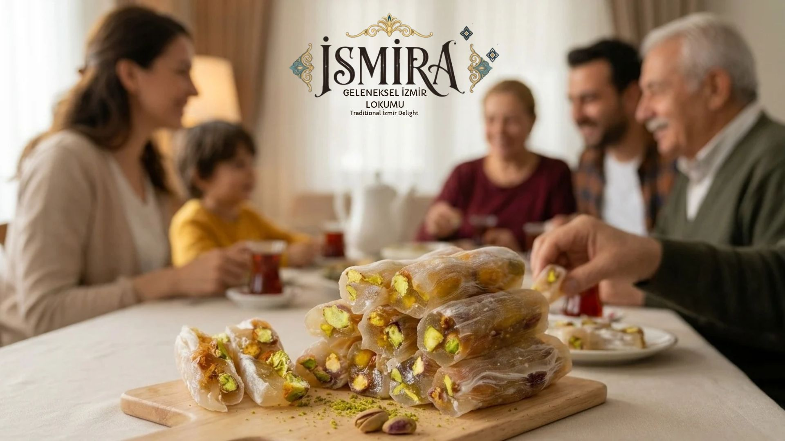

Hızlı WhatsApp Siparişiİsmira Lokum olarak, İzmir'in asırlık lokum geleneğini bir tatlıcılık işinden öte, saray usulü zengin bir sanat dalı olarak yaşatıyoruz.
Lokumlarımızda hiçbir yapay koruyucu, glikoz şurubu veya kimyasal renklendirici yer almaz. Sadece saf şeker pancarı ve doğal meyve özleri kullanıyoruz.
Tüm ürünlerimiz İzmir'deki kendi modern üretim tesisimizde kendi ustalarımızca üretilir. Fason veya aracı yoktur; doğrudan fabrikadan ilk elden sevk edilir.
Siparişlerinizi en taze haliyle koruyacak hijyenik, hava almayan premium kutularda paketleyerek, doğrudan kapınıza kadar ulaştırıyoruz.
Tüm çeşitlerimiz kendi imalatımızdır. Aracısız toptan lokum alımları, özel kutulama veya kurumsal talepleriniz için doğrudan fabrikamızla WhatsApp üzerinden iletişime geçebilirsiniz.
WhatsApp ile Sipariş VerSipariş süreçleri, ürün tazeliği ve gönderim hakkında merak edilen tüm detaylar.